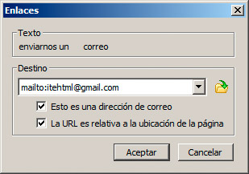
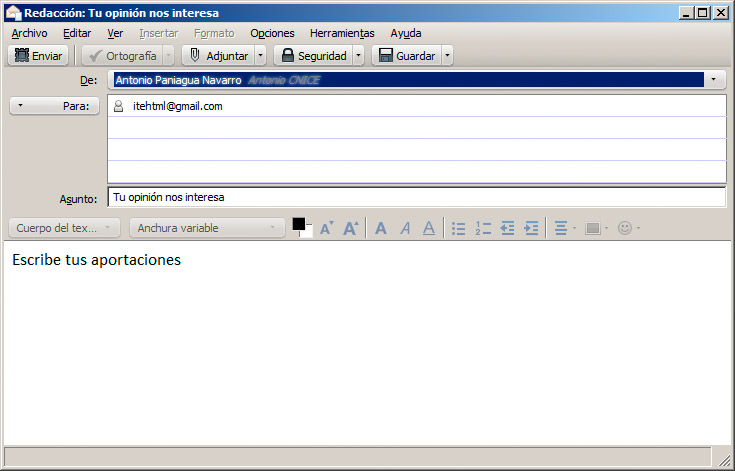

Probemos con este ejemplo:
<p>Puede <a href="mailto:itehtml@gmail.com">enviarnos un correo</a> con sus impresiones.</p>
Al hacer clic sobre ese enlace, se despliega nuestra aplicación de correo o nuestro correo web, si lo tenemos configurado y podemos enviar un mensaje.
Si lo hacemos desde el editor web, debemos activar la casilla Esto es una dirección de correo.

Añadir contenido al mensaje
Un enlace como el anterior se puede mejorar un poco para completar el mensaje. Estos cambios no son del todo estándar, si bien funcionan en los navegadores web actuales.
Podemos añadir algunos valores a la URL, separando el primero con el signo ?. Cada valor posterior irá separado por el signo &. Así contamos con todos los elementos habituales de un correo electrónico (subject para el asunto, body para el cuerpo, cc para copia, bcc para copia oculta, ...). Así, el ejemplo podría quedar de esta manera:
<p>Puede <a href="mailto:itehtml@gmail.com?subject=Tu%20opinión%20nos interesa&body=Escribe%20tus%20aportaciones">enviarnos un correo</a> con sus impresiones.</p>
Nota
Si optamos por profundizar en esta vía, hay que reemplazar en el cuerpo y el asunto los espacios por el signo %20 y los saltos de línea por %0A, para tener direcciones bien formadas.
El ejemplo anterior nos arroja un mensaje ya completo, como se muestra en la figura:

Protección del correo electrónico
El incorporar una cuenta de correo a una página web es una opción muy útil, pero que por desgracia hace que se exponga a los robots que permanentemente peinan la web buscando nuevas direcciones de correo electrónico para enviar correos no deseados, más conocidos como spam.
Por este motivo, el incorporar nuestra dirección de correo a la web debería ser algo muy excepcional. Aquí van algunos consejos:
- Utilizar una dirección de correo específica para el proyecto, no la personal habitual. Hoy en día hay servidores de correo que hacen una gestión fantástica del spam. Deberíamos optar por uno de ellos.
- Podemos optar por no indicar la dirección como un enlace, sino como texto o como una imagen. Una frase del tipo "Escríbeme a la dirección pedro en gmail" protegerá nuestra dirección al tiempo que permite localizarnos con facilidad.
- También contamos con algunas soluciones tecnológicas que emplean Javascript u otras codificaciones para proteger la dirección de correo, aunque no son del todo efectivas.
En conclusión, esta vía de comunicación es apropiada, aunque se debe usar con precaución. Veremos más adelante otras posibilidades para obtener comentarios de nuestros visitantes.